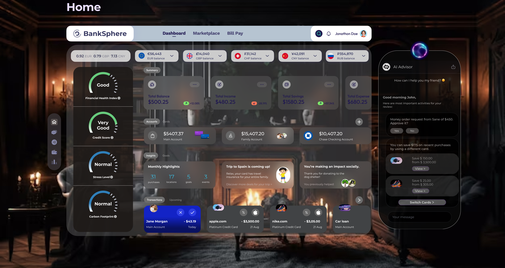
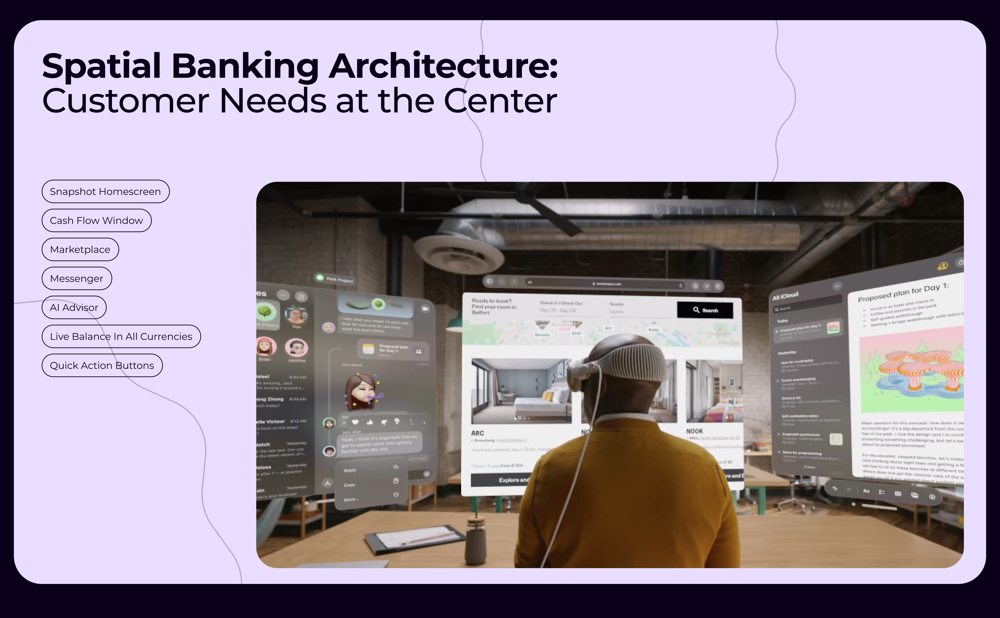
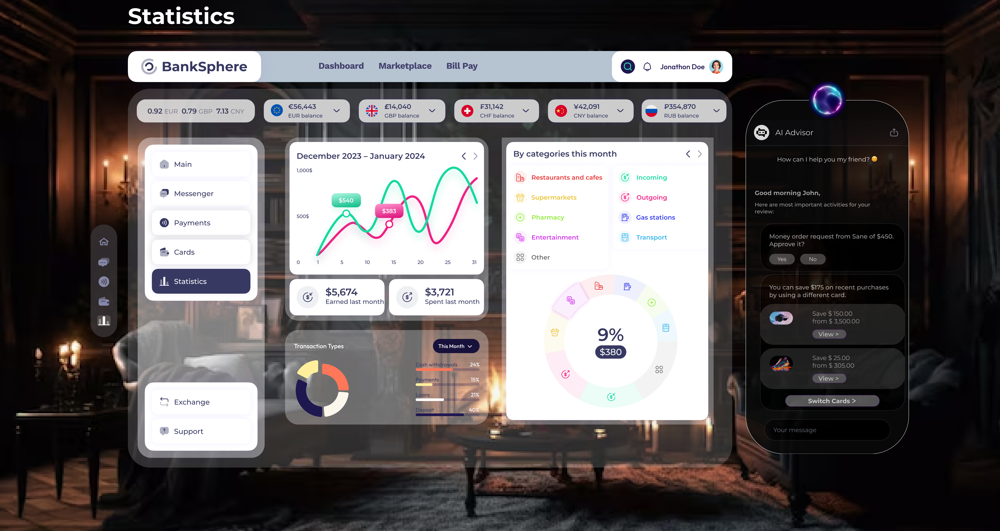
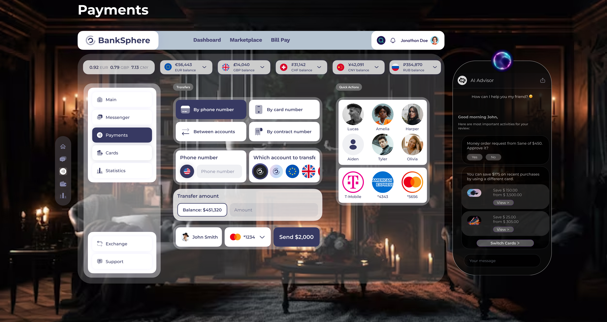
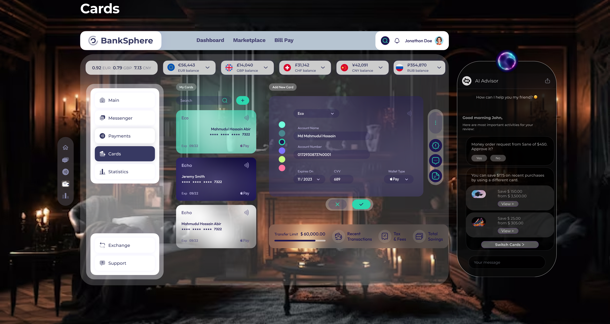
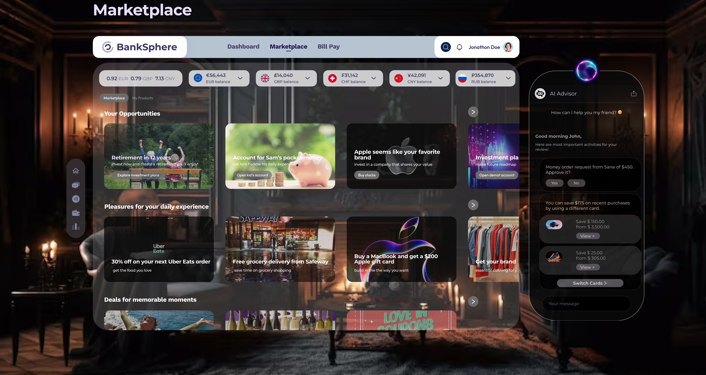
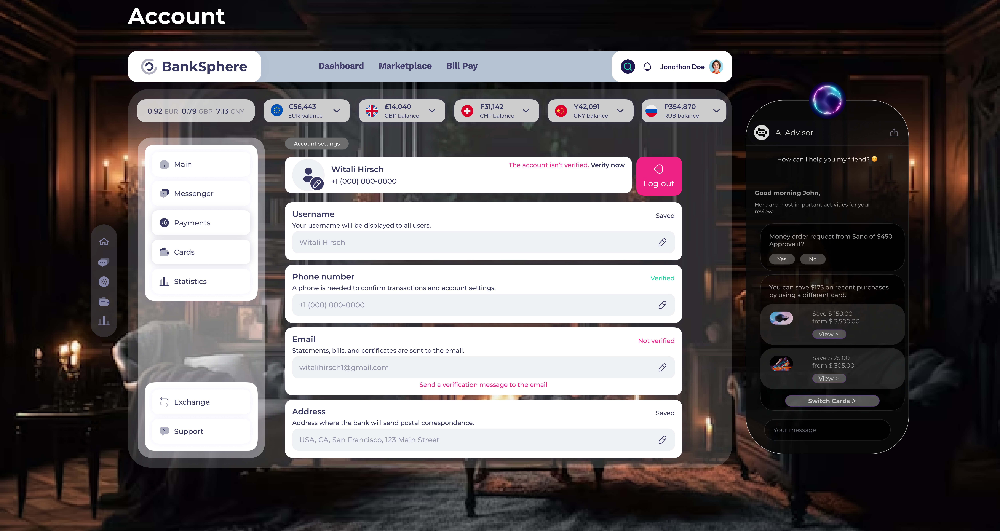
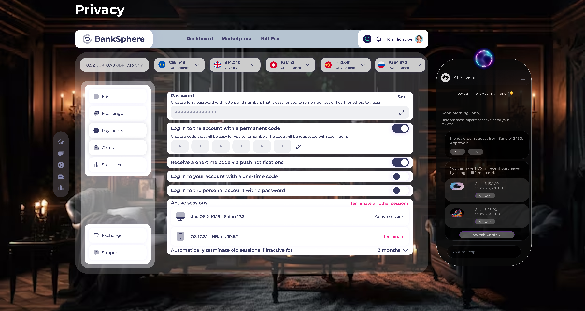
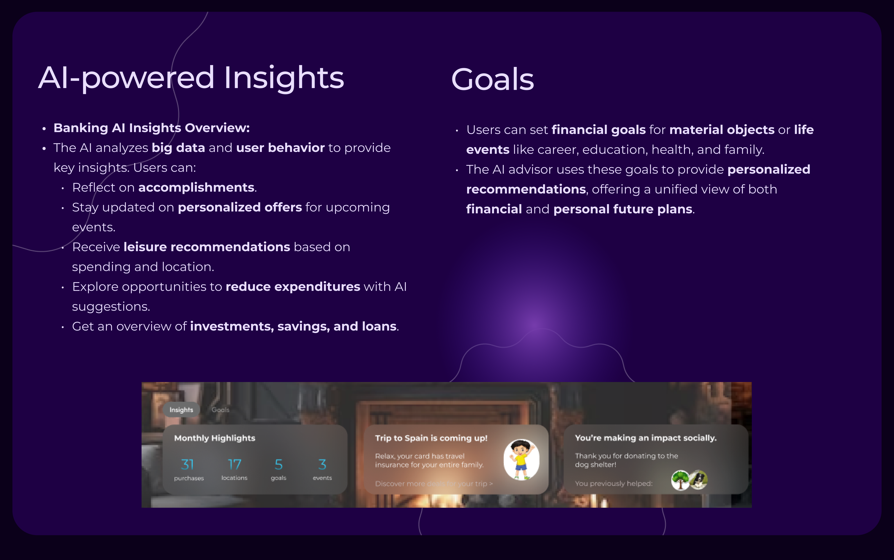

01 The real problem
The AI could do everything. That was exactly the problem.
Traditional banking interfaces were built for a world of discrete, user-initiated actions. You tap, something happens. You know what changed, because you caused it. AI breaks that model completely — the system acts, sometimes proactively, sometimes invisibly. That's powerful. And for most users, terrifying.
Beyond AI, the broader problem is that existing banking experiences feel fragmented and static. Your credit score lives in one app. Your investments in another. Your budgets in a spreadsheet. The mental overhead of managing a modern financial life has grown faster than the tools designed to manage it.
Spatial computing offered a genuine design opportunity: not just bigger screens, but interconnected, contextual financial surfaces that could exist where you live and work — not just inside a phone.
"I'd use it if I could see what it was about to do before it did it. Right now it feels like handing someone your wallet and hoping they give it back."
User interview · 34-year-old, self-employed, 3 active bank accounts
The reframe: the design problem isn't building a capable AI interface — it's building a transparent one. Trust, not speed, became the primary design metric.
BankSphere · spatial AI banking concept · designed for the next generation of financial interaction
02 Why this matters
Three converging forces that make this the right moment to explore spatial banking.
AR/VR adoption
Spatial computing headsets are moving from gaming peripherals to productivity tools. The design language for everyday spatial applications is still being written — banking has an opportunity to define it early.
AI personalization
Hyper-personalization is the direction every major fintech is moving. The gap isn't capability — it's trust. Users want AI that explains itself, not AI that acts invisibly.
Financial fragmentation
The average financially active adult manages 4–6 separate financial services. No single interface gives them a unified, actionable view of their financial health in real time.
Open Banking APIs
The regulatory and technical infrastructure now exists to aggregate data across banks, wallets, and fintech services. The UX layer hasn't caught up. BankSphere is an exploration of what that UX could become.
This project is framed as a speculative product concept — a serious design exploration of a near-future banking experience, not a claim of a shipped product. The goal was to push past the constraints of current mobile banking UX and ask: if you had a spatial canvas and a capable AI co-pilot, what would financial management look like?
03 Real constraints
Designing for trust under constraints that pulled in opposite directions.
Concept-only — no real AI backend to test against
All AI behaviors were simulated in prototype. I had to be ruthlessly specific about what the AI would say, when it would act, and how it would explain itself — without a real model. Every AI response was hand-authored for each scenario.
Financial data is emotionally loaded — testing with fictional data has limits
Users worked with fictional account data. Real banking involves anxiety, aspiration, and shame that don't surface in a 45-minute Maze session. Every finding had to be interpreted with that gap explicitly in mind.
Spatial UI was a direction, not a validated hypothesis
Multi-panel spatial layouts were suggested by the brief. I had to validate whether they actually helped users or just looked impressive. Two testing rounds later: they helped in specific contexts only — not as the default state.
Two opposing user archetypes — same product surface
Power users wanted full AI autonomy. Anxious users wanted to approve every step. A single modal pattern couldn't serve both — this forced a permission-tier system (Suggest / Confirm / Auto) that added significant design complexity but was the right call.
04 What research actually found
Three findings that held. One assumption that collapsed on first test.
8 / 10
Users trusted an AI action more when they saw the reasoning before the result — not after. Sequence of disclosure mattered more than the quality of the explanation itself.
−30%
Decision time reduction when context panels showed relevant account history alongside AI suggestions. Fewer tab-switches meant faster, more confident decisions.
6 → 1
Task abandonment dropped from 6/10 to 1/10 when confidence percentages were replaced with 30-day sparklines. Users trusted trend evidence over abstract numbers.
0 / 10
Users who wanted the three-panel spatial layout by default. It was overwhelming. Moved to opt-in power mode. The assumption that "spatial = better" didn't survive round one.
The most important finding: users don't distrust AI — they distrust unexplained AI. When the interface showed its work, trust scores increased across every segment, including the most skeptical users. Transparency isn't a UX feature — it's the product.
05 How I worked
10 weeks. Two major pivots. One direction that only emerged from testing.
Wk 1–2
Competitive audit + mental model mapping
Audited 8 AI-adjacent fintech products (Cleo, Copilot, Mercury, Monarch). Mapped where AI actions were visible vs. hidden. Key finding: most hide AI reasoning entirely — treating it as a backend process, not a UX layer.
Wk 3–4
Spatial layout — always-on three-panel model
Designed a three-panel persistent layout: accounts / AI assistant / action context. Tested with 10 users. Unanimous response: overwhelming. No one knew where to look first.
Pivoted
Wk 5–6
Context-on-demand model
Rebuilt around a single-surface default with expandable context panels triggered by user action or AI suggestion. Retested — comprehension improved significantly. This became the architectural foundation.
Shipped direction
Wk 7–8
Trust layer — AI explanation system
Designed three components: the Reason Card (why the AI acted), the Preview Rail (what it will do before it does it), and the Audit Log (what it did and when). Each tested independently before being combined.
All 3 shipped
Wk 9–10
Permission tiers + final prototype
Designed a 3-tier autonomy model: Suggest / Confirm / Auto — set per-category by the user. Cut scope: removed AI-to-AI negotiation feature — too complex for v1 with no validation data to justify the complexity.
1 feature cut
06 Design principles
Five principles that guided every spatial design decision.
Spatial computing introduces a new design vocabulary. These principles ensured that BankSphere felt like a natural evolution of banking — not a gimmick dressed in spatial form.
🏠
Familiar
Inspired by the card layout of Netflix and Apple TV — patterns users already understand. Reduce cognitive overhead at the surface level.
🧑
Human-Centred
Every spatial surface reflects the user's actual financial life — not an abstract dashboard. Goals, stress levels, carbon footprint: the whole person.
📐
Dimensional
Depth is used to communicate hierarchy — primary actions in the foreground, contextual detail layered behind. Space carries meaning.
✅
Authentic
No decorative 3D for its own sake. Every spatial element earns its place by making a financial concept clearer or a decision faster.
🌐
Immersive
The banking environment surrounds the user — but never overwhelms. Immersion serves focus, not spectacle. The room is a canvas, not a distraction.
07 Snapshot homescreen
The home surface: every financial KPI, one spatial glance.
The Snapshot Homescreen was designed around a single question: what does a user need to know about their financial health in the first 10 seconds of opening the app? The answer informed every layout decision.
Inspired by the card-based layouts of Netflix and Apple TV, the home surface presents a modular, fully customizable financial dashboard — users arrange panels according to what matters most to them. No two users need the same layout.

Snapshot Homescreen · Financial Health Index, credit score, stress level, carbon footprint · accounts, insights, goals, and live transactions
Summary bar
Total balance, total income, total savings, and total expenses — all tracked with real-time delta indicators showing movement vs. last period.
Accounts + Cards
All connected accounts visible in one surface — Main, Family, and third-party bank accounts via Open Banking API. No app-switching required.
Insights panel
AI-generated highlights: monthly activity summary, upcoming event-based recommendations, and social impact tracking from charitable spending.
Live transactions
Real-time transaction feed with inline AI approval requests — users can approve or decline a payment transfer without navigating away from the home surface.
08 Spatial architecture
Seven interconnected surfaces. One financial ecosystem.
BankSphere isn't a single screen — it's a spatial banking environment made of seven purpose-built windows, each designed to handle a specific financial context without requiring the user to lose their place in another.

Spatial banking architecture · seven purpose-built financial surfaces · customer needs at the center
Snapshot Home
The command center. Financial health KPIs, all accounts, insights, and live transactions in one modular surface.
Cash Flow Window
Income vs. spending trends with category breakdowns. Designed for quick financial pattern recognition, not deep analysis.
Marketplace
AI-curated financial opportunities — investment plans, partner offers, and lifestyle deals matched to spending habits and stated goals.
Messenger
Social banking: send money, request transfers, and manage shared finances — all within a conversation thread.
AI Advisor
The co-pilot. Always present, context-aware, and proactive — surfaces recommendations based on what the user is currently doing, not just what they ask.
Live Currency Balances
Multi-currency balances visible at a glance — EUR, GBP, CHF, CNY, RUB — with live exchange rates and conversion tools.
Quick Actions
Contextual action buttons that change based on the active surface — reducing the distance between intent and execution.
Statistics
Deep financial analytics — transaction type breakdown, earned vs. spent, category spend — for users who want the full picture.
09 Screen showcase
Every surface designed for a specific financial context.
Each screen in BankSphere was designed as a standalone spatial window — opinionated about its purpose, connected to the broader ecosystem, and always accompanied by the AI Advisor panel.

Statistics · income/spending timeline, category breakdown, transaction types · AI Advisor persistent right panel

Payments · transfer methods, contact quick-actions, balance-aware send flow

Cards · multi-card management, new card flow, transfer limits, Apple Pay integration
Messenger · money requests and transfers embedded inside conversation threads · social banking made native

Marketplace · AI-curated investment opportunities, lifestyle deals, and partner offers matched to spending habits

Account Settings · profile, verification status, phone, email, and address management

Privacy Settings · active sessions, authentication methods, and automatic session termination controls
10 Financial health
Four KPIs that make financial wellness visible at a glance.
The Financial Health panel was the most debated surface in the project. The question: how do you present a user's financial reality — including stress and carbon footprint — without creating anxiety or feeling invasive? The answer was radial gauges with plain-language ratings ("Good", "Very Good", "Normal") rather than scores or percentages.
Financial Health Index
Composite score across liability coverage, risk protection, and long-term savings strategy. Provides a single headline indicator without overwhelming detail.
Credit Score
Real-time credit health tracking with AI explanations for any changes — not just a number, but context for what drove it and what could improve it.
Stress Level
Financial stress tracked via connected health data (Apple Watch integration in concept). Surfaces at moments when proactive AI support could reduce anxiety.
Carbon Footprint
Spending-based carbon impact tracking for users who want to align their financial decisions with environmental values. Opt-in, never surfaced as a guilt mechanism.
Access to all accounts — in one surface
Through the Open Banking API, BankSphere aggregates data from multiple banks and fintech services — checking, family, team, junior, savings, investment, third-party bank accounts, crypto, and eWallets — all visible without switching apps.
Users can also set automated money transfers between accounts based on balance thresholds or shortfalls — the financial equivalent of having a smart assistant manage the plumbing while you focus on the strategy.
11 AI insights & goals
AI that connects your financial data to your actual life.
The AI Insights panel goes beyond transaction categorization. It analyzes behavior patterns, upcoming events, and stated goals to surface personalized, contextual recommendations — not generic financial tips.

AI Insights + Goals · monthly highlights, event-based recommendations, social impact tracking, and savings goal progress
Insights
The AI analyzes big data and user behavior to surface: accomplishments, personalised offers for upcoming events, leisure recommendations based on spending and location, and investment, savings, and loan overviews.
Goals
Users set financial goals for material objects or life events — career, education, health, family. The AI uses these goals to shape every recommendation — creating a unified view of financial and personal future plans.
Event context
"Trip to Spain is coming up — your card has travel insurance for your entire family." Context-aware recommendations that connect financial capability to real upcoming moments in the user's life.
Social impact
"You're making an impact socially — thank you for donating to the dog shelter." Positive reinforcement of spending that aligns with the user's values — banking as a reflection of who you are, not just what you earn.
12 AI Advisor
Not a chatbot. A financial co-pilot.
The AI Advisor is the most critical surface in BankSphere — and the one that required the most design discipline. The instinct was to make it powerful. The design challenge was making it trustworthy.
It acts as a co-pilot: context-aware of what banking surface is active, proactive rather than reactive, and transparent about its reasoning. Every recommendation surfaces as a chat message with an actionable card — not a notification that appears and disappears.
Transparency
Trust
Loyalty
The AI Advisor is always present — a persistent right-panel companion that adjusts its recommendations based on the active financial surface. On the Payments screen, it flags unusual transfers. On Statistics, it surfaces spending anomalies. On Marketplace, it matches offers to stated goals.
Recommendations are delivered as conversational messages with embedded action cards — users can approve, decline, or explore deeper without leaving the current context. Voice interaction is supported for hands-free use cases.
The design philosophy: reflect the financial dimension of the user's lifestyle — not just their account data. The AI considers goals, events, health data, and values. This proactivity is the foundation for long-term trust between AI-powered banks and their customers.
What the AI Advisor can do.
These are the use cases that shaped the AI Advisor's design — each one required a specific interaction pattern, a specific level of transparency, and a specific trust contract with the user.
Create a personalised plan for improving credit score — with step-by-step actions and timeline estimates
Explain which factors are currently increasing or decreasing financial stress level
Automatically transfer funds between accounts when a shortfall is detected — with user permission pre-set per category
Notify via Apple Watch when specific transaction types occur — travel spend, large purchases, or unusual activity
Alert when a tracked stock or company share drops below a threshold — with contextual buy/hold recommendation
Flag a transaction made abroad as potentially suspicious — surfacing verification before the user even checks their statements
Show a complete transaction list from a trip, grouped by category, with spending insights
Guide the user through tax preparation — scanning uploaded documents, categorising deductible expenses, and preparing summary reports
13 The decisions that mattered
Three choices that defined the product. And why I made them.
Why
Standard pattern: AI acts, then shows a log. This felt fast but generated the most anxiety in testing — users couldn't undo what they hadn't approved. The Preview Rail shows the AI's proposed action and rationale before execution. Approval-before-action increased confidence scores by 40% in Lyssna tests.
The trade-off accepted: Power users found the preview step annoying. That's why the permission tier system exists — users who trust the AI in a specific category can set it to Auto and skip the preview entirely. The step isn't mandatory; it's the safe default for new users and anxious archetypes.
Why
Early prototypes showed AI confidence as a percentage ("87% confident this transfer is safe"). Testing showed this increased anxiety — users didn't know what 87% meant in a financial context, and it implied 13% of the time something goes wrong. Replacing with a 30-day sparkline reduced task abandonment from 6/10 to 1/10. Users trusted trend evidence over abstract numbers.
What this cost: Sparklines require historical data. For new users, the sparkline is empty — which looks worse than a percentage. I designed a "building your history" state for the first 30 days: honest, clear, and expectation-setting rather than just empty.
Why
A global "trust level" slider was the first design. Testing revealed users don't think about trust globally — they think per task. A user might fully trust the AI to pay bills automatically but want to confirm every investment decision manually. Per-category settings (Suggest / Confirm / Auto per transaction type) matched how users actually reasoned about money and risk.
What I killed: A natural language setting ("I want the AI to be cautious with investments"). It sounded good. In testing, no one could predict how the AI would interpret it. Explicit toggles per category beat conversational configuration every time — ambiguity in a financial context creates anxiety, not delight.
14 Impact
What moved in testing — and the number I couldn't prove.
80%
Task comprehension uplift
Measured against a standard banking UI baseline in Maze scenario tests. Users identified what the AI had done and why in 80% of cases without any explanation prompt.
−30%
Decision time
Context panels reduced navigation time before confirming an AI action. Measured as task-completion time in timed Lyssna tests against baseline.
9 / 10
AI actions rated "clearly explainable"
Post-task survey. The one user who disagreed was confused by the Audit Log timestamp format — a copy problem, not a structural one. Fixed before final prototype.
0
Trust-breaking moments in final round
Round 1 had 6 trust-breaking moments. Round 3 had zero. Each testing round, the trust layer caught a failure mode the previous round had missed.
What I couldn't prove: Real financial trust over time. Testing with fictional data in a 45-minute session can't replicate the anxiety of an AI touching real money over weeks and months. The metrics measure prototype comprehension — not long-term behavioral trust. That gap is the honest limitation of this study, and the most important thing to validate if this concept moved toward production.
15 Reflection
What I learned. What comes next. What this concept can't answer alone.
What this project taught me
AI UX is trust engineering before it's anything else. The features that looked most impressive in a demo — spatial panels, autonomous actions, predictive alerts — were the ones that most damaged trust in testing. The interface that showed its work quietly outperformed the interface that showed off. Transparency is a design feature, not a legal requirement or a disclaimer.
What I'd change
I'd run longitudinal testing with real financial stakes — even a sandboxed account with actual money over 4 weeks. The most important failure modes in AI finance products only surface after repeated use, not in a 45-minute session. I'd also explore voice interaction more rigorously — in a spatial context, the most natural interface may not be a panel at all.
Open questions for future exploration
Ethics of ambient AI — How should a banking AI behave when it detects financial stress through health data? Helpfulness and privacy are in genuine tension here.
Accessibility in spatial computing — The spatial model assumes physical capability. A production version would need rigorous accessibility research for users who can't use gesture or gaze interaction.
Trust erosion over time — A single AI mistake in a financial context can destroy months of built trust. How does the product recover gracefully, transparently, and without compounding the anxiety?
Regulatory compliance — AI-driven financial recommendations exist in a heavily regulated space. A production version would need legal review in every market — by design, not as an afterthought.